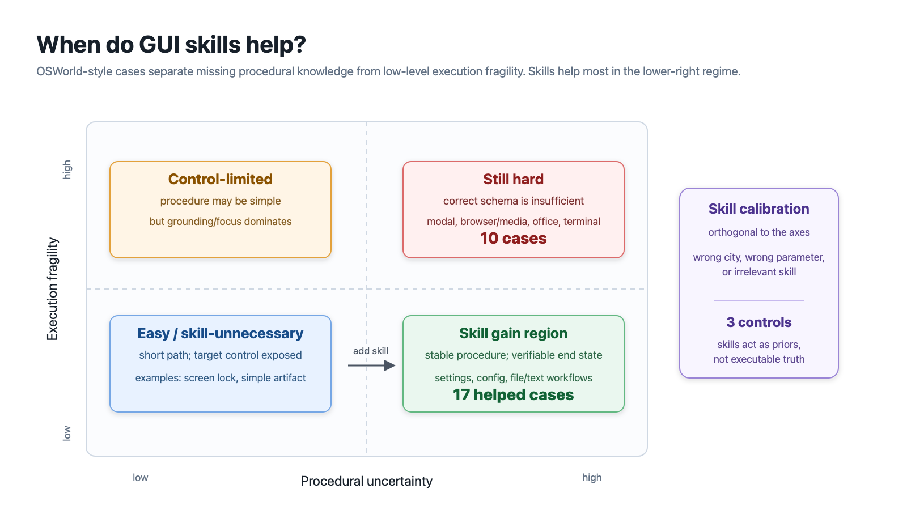
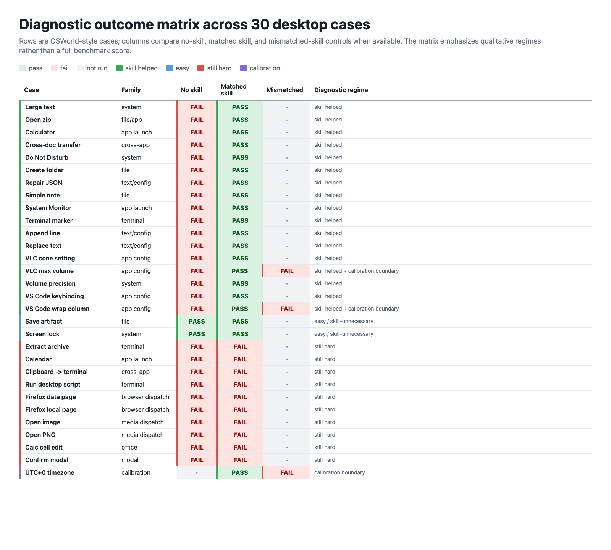
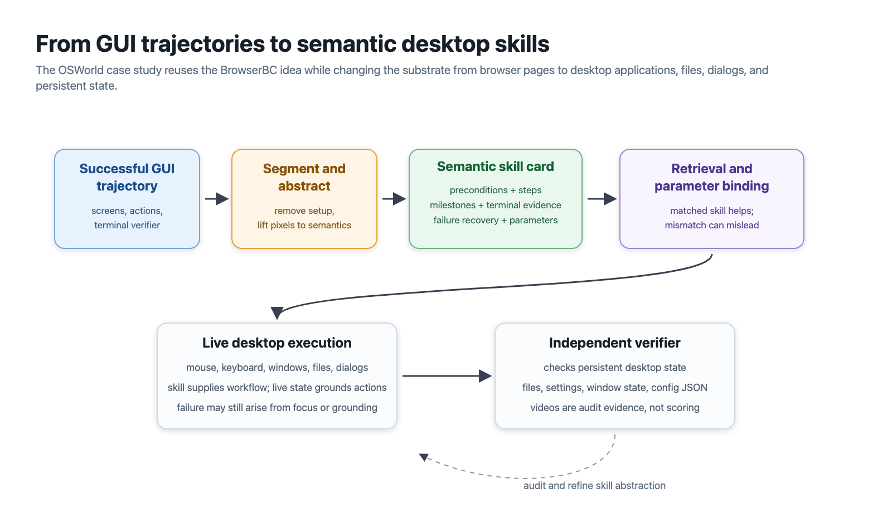
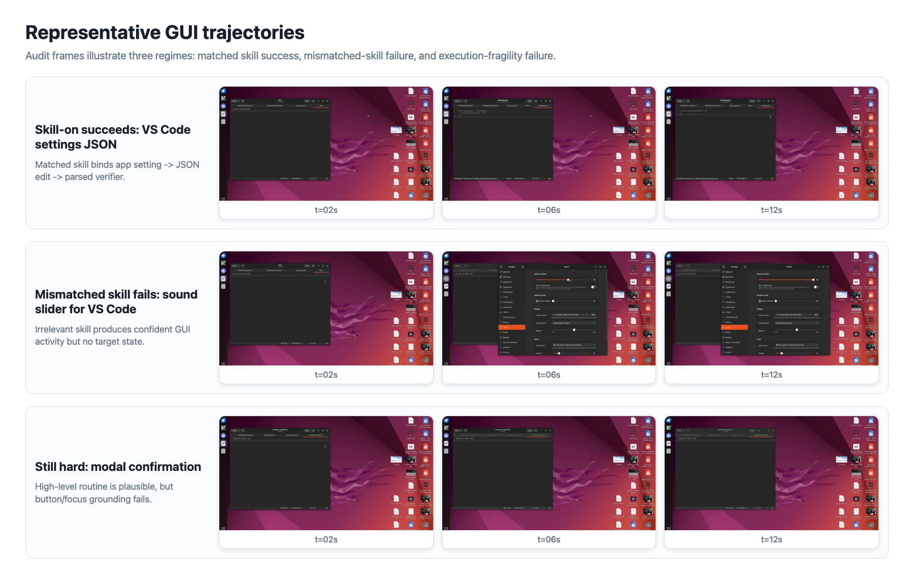

OSWorld transfer case study
When do semantic GUI skills help beyond the browser?
This page expands the paper's OSWorld-style case study. It is not a full OSWorld benchmark; it is a diagnostic transfer study asking whether BrowserBC-style skills remain useful when the substrate changes from web pages to Ubuntu desktop applications, files, dialogs, and persistent state.
Mechanism
Skills reduce procedural uncertainty, not all GUI fragility.
The case study separates two failure sources. A semantic skill helps when the agent needs a task schema: what to open, what to edit, how to persist the change, and what final evidence counts. It is weaker when the bottleneck is focus, file pickers, modal grounding, terminal robustness, or application recovery.

Diagnostic matrix
A selected suite designed to expose boundaries.
The matrix keeps successful, easy, still-hard, and mismatched-skill cases visible together. The goal is mechanism analysis rather than a leaderboard-style OSWorld score.

What transfers
The portable object is a semantic state-transition model.
Browser tasks express the skill over pages, forms, links, search results, and submitted mutations. Desktop tasks express the same abstraction over windows, files, preferences, dialogs, and local artifacts. The representation transfers when progress and final state can be recognized semantically.

Representative GUI cases
Four cases illustrate the regimes.
The released page keeps the verifier outcomes and representative trajectory frames lightweight enough for GitHub Pages, while preserving the qualitative contrast between partial progress, matched-skill completion, easy success, and brittle execution.
Skill helped + calibration control
VS Code word-wrap setting
The matched skill maps a GUI settings task into persistent JSON editing. An unrelated sound-slider skill confidently manipulates the wrong application surface and leaves the target state unchanged.
no-skill FAIL
matched skill PASS
irrelevant skill FAIL
matched skill PASS
irrelevant skill FAIL
No skill
Verifier failed: the VS Code settings file remained unchanged, so the target word-wrap column was not persisted.
Matched skill
Verifier passed: the setting was edited and saved as a persistent application preference.
Irrelevant skill
Verifier failed: the retrieved sound-settings routine drove the agent toward the wrong GUI surface.
Takeaway: skill retrieval and parameterization matter; a skill should be treated as calibrated prior evidence, not as a command to ignore live state.
Skill helped
GNOME volume precision
The no-skill run reaches the Sound settings surface but leaves the slider at an intermediate value. The matched skill supplies the state-changing routine and terminal evidence.
no-skill FAIL
matched skill PASS
matched skill PASS
No skill
Verifier failed: the run reached the Sound settings surface but stopped at an intermediate output value.
Matched skill
Verifier passed: the slider was driven to the requested endpoint and the final state was independently checked.
Takeaway: skills help when the GUI surface is reachable but the agent lacks the exact state-changing schema.
Easy / skill-unnecessary
Visible text artifact save
Both conditions satisfy the verifier. This case calibrates the claim: when procedural uncertainty is low, a skill may be harmless but should not be expected to produce a meaningful gain.
no-skill PASS
matched skill PASS
matched skill PASS
No skill
Verifier passed: the requested text artifact was created in the expected location without additional procedural guidance.
Matched skill
Verifier passed: the same shallow file-writing routine completed successfully with the distilled skill.
Takeaway: no-skill success is expected on shallow tasks and should not be hidden from the analysis.
Still hard
Modal confirmation
The high-level skill is semantically plausible, but both runs fail the verifier. The bottleneck is not knowing that a modal must be confirmed; it is robustly grounding the correct focused dialog action.
no-skill FAIL
matched skill FAIL
matched skill FAIL
No skill
Verifier failed: the final confirmation artifact was not produced after the dialog interaction.
Matched skill
Verifier failed: the high-level routine identified the need to confirm, but execution did not reliably ground the active modal action.
Takeaway: semantic skills clone procedural knowledge, but they do not by themselves solve focus, modal grounding, or low-level GUI action reliability.
